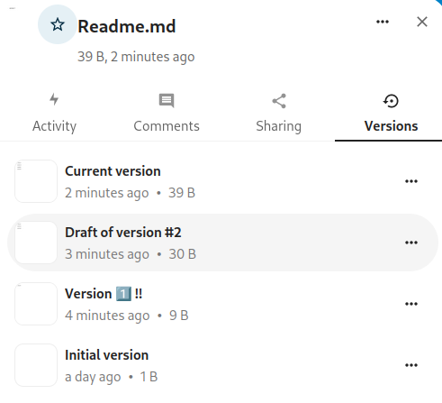

Control de versións
Nextcloud admite un sistema de control de versións sinxelo para os ficheiros. O control de versións crea copias de seguridade de ficheiros accesíbeis a través da lapela Versións na barra lateral de detalles. Esta lapela contén o historial do ficheiro onde pode reverter un ficheiro a calquera versión anterior. Os cambios feitos a intervalos superiores a dous minutos gárdanse en datos/[usuario]/versións.

To restore a specific version of a file, click the circular arrow to the right. Click on the timestamp to download it.
A aplicación de versións declara caducas as versións antigas automaticamente para asegurarse de que o usuario non queda sen espazo. Para eliminar as versións antigas úsase este patrón:
No primeiro segundo gardamos unha versión
Durante os primeiros 10 segundos Nextcloud mantén unha versión cada 2 segundos
Durante o primeiro minuto Nextcloud mantén unha versión cada 10 segundos
Durante a primeira hora Nextcloud mantén unha versión cada minuto
Durante as primeiras 24 horas Nextcloud mantén unha versión cada hora
Nos primeiros 30 días Nextcloud mantén unha versión cada día
Após os primeiros 30 días Nextcloud mantén unha versión cada semana
As versións axústanse ao longo deste patrón cada vez que se crea unha nova versión.
The version app never uses more than 50% of the user’s currently available free space. If the stored versions exceed this limit, Nextcloud deletes the oldest versions until it meets the disk space limit again.
Naming a version
Warning
Naming a version is currently not available when the group folders or S3 versioning apps are enabled.
You can give a name to a version.


When a version has a name, it will be excluded from the automatic expiration process.
Deleting a version
Warning
Deleting a version is currently not available when the group folders or S3 versioning apps are enabled.
You can also manually delete a version without waiting for the automatic expiration process.